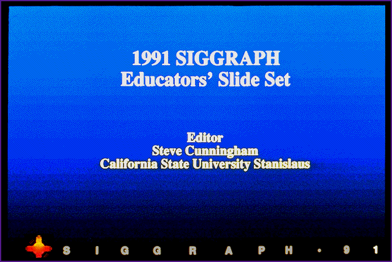
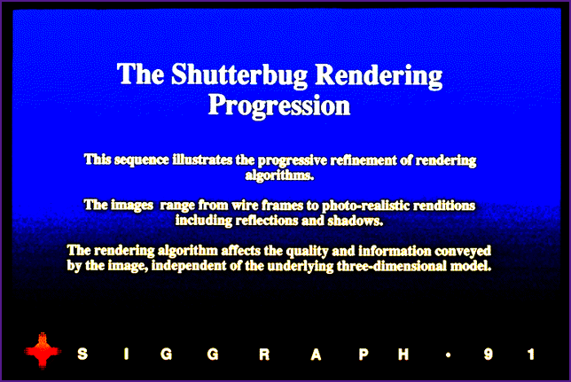
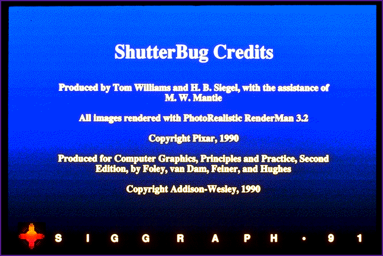
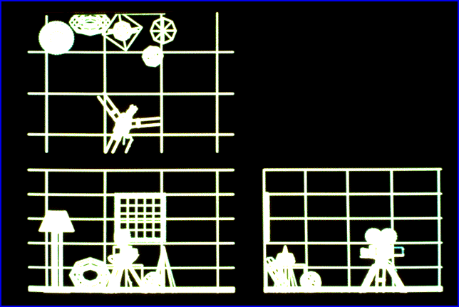56
Living room scene with movie camera. Orthographic projections.
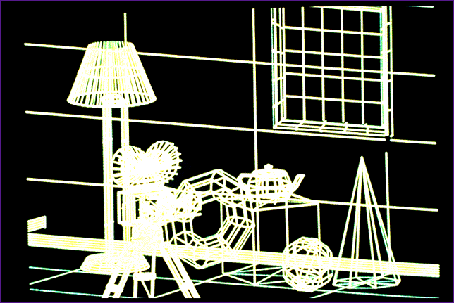57
Axonometric Projection
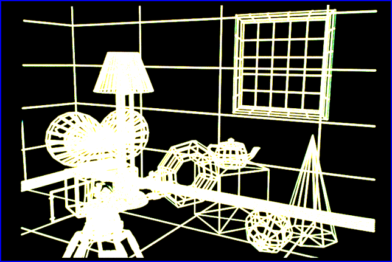58
Perspective Projection
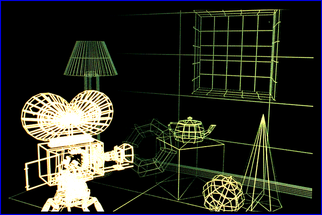59
Depth Cueing
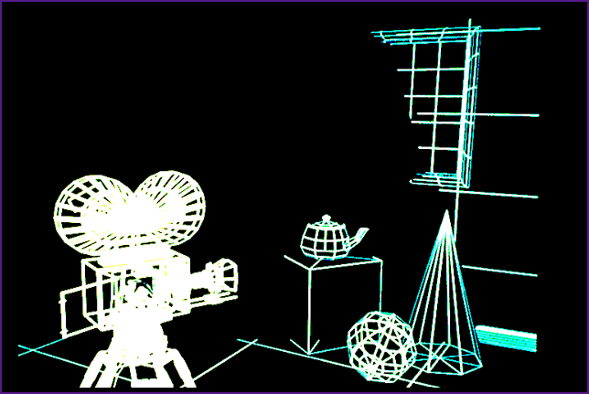60
Depth Clipping
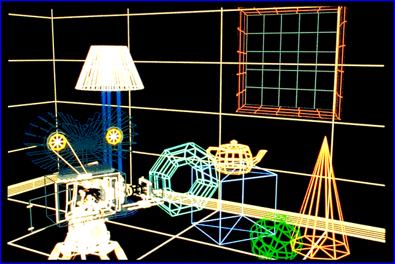61
Colored Vectors
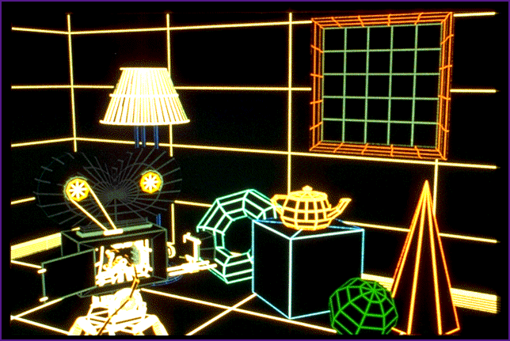62
Visible-Line Determination
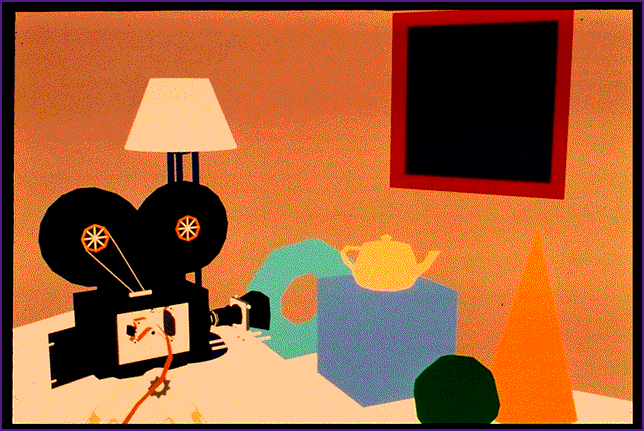63
Visible-Surface Determination with Ambient Illumination Only
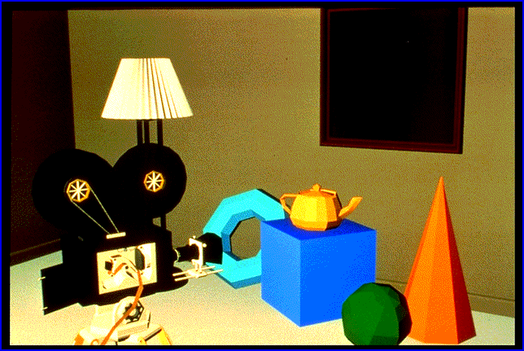64
Individually shaded polygons with diffuse reflection
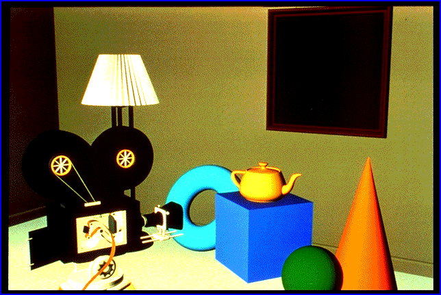65
Gouraud Shaded Polygons with Diffuse Reflection
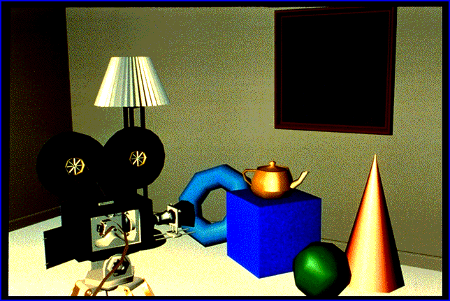66
Gouraud Shaded Polygons with Specular Reflection
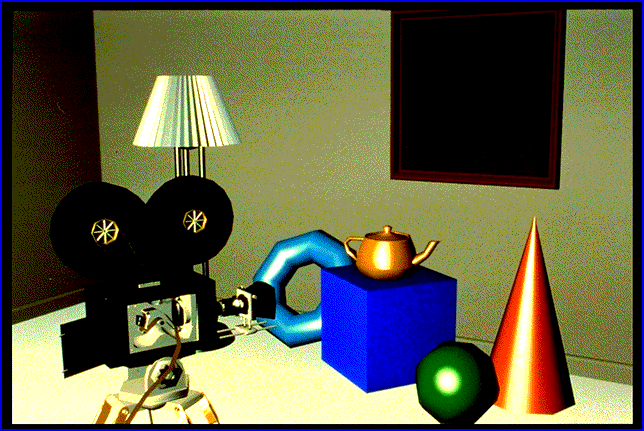67
Phong Shaded Polygons with Specular Reflection
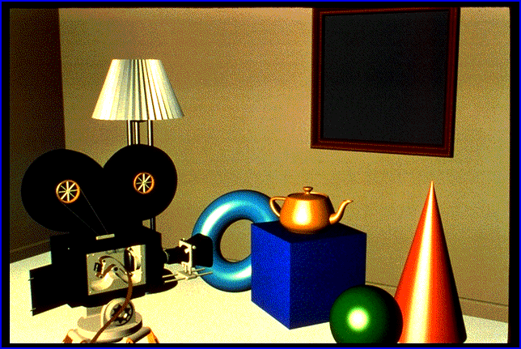68
Curved Surfaces with Specular Reflection
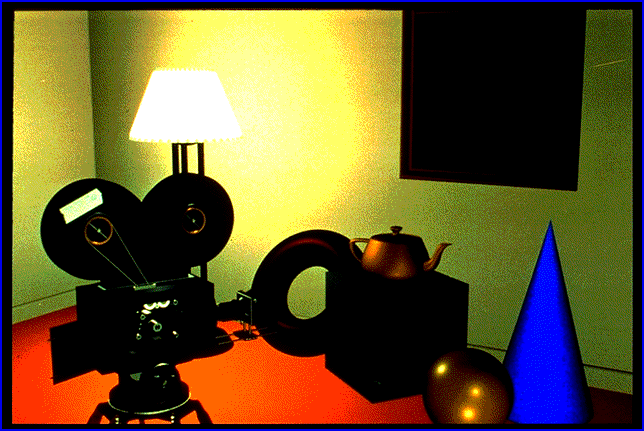69
Improved Illumination Model and Multiple Lights
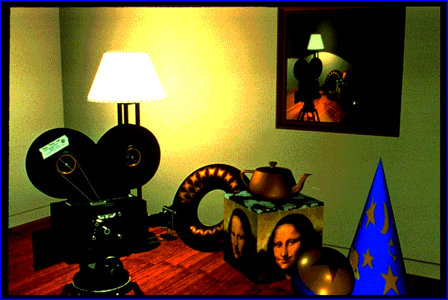70
Texture Mapping
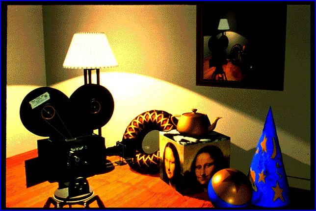71
Displacement Mapping
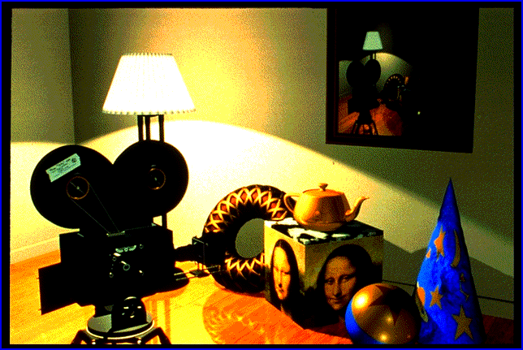72
Reflection Mapping